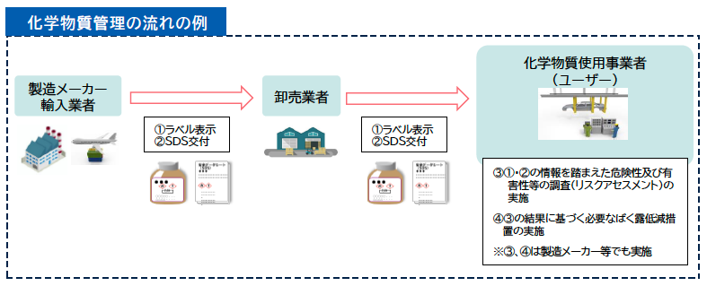

厚生労働省は令和８年２月１日から２月28日までの１か月間、「化学物質管理強調月間」を実施します。
職場において製造または取り扱われる化学物質は、数万程度存在すると言われています。そのうち、危険性・有害性を有する化学物質は約2,900程度あることがわかっています。厚生労働省では、化学物質による労働災害を防止するため、労働安全衛生法に基づく新たな化学物質規制を導入し、令和６年４月から施行しています。
「化学物質管理強調月間」は、職場における危険・有害な化学物質管理の重要性に関する意識の高揚を広く一般に図るとともに、化学物質管理活動の定着を図ることを目的としたもので、毎年２月に実施することとしております。
化学物質管理強調月間のスローガンを定め、別紙の実施要綱に基づき、化学物質管理強調月間を実施します。
教材
災害分析
【化学物質の性状に関連の強い労働災害の分析結果概要】
業種別では、化学工業（119件）、金属製品製造業（88件）よりも食料品製造業（162件）が多く、小売業・飲食店（計134件）、清掃・と畜業（97件）建築工事業・その他の建設業（計141件）といった、第三次産業や建設業といった幅広い業種で発生。
製品別では、厨房やビルメンテナンスで多く使用される洗剤・洗浄剤による労働災害が、約３割（371件）と圧倒的に多く、消毒・除菌・殺菌・漂白も多い。
作業別では、製造作業中が1割程度であるのに比較して、清掃・洗浄作業中が約３割（382件）、移し替え・小分け・交換・補充作業中（124件）、点検・修理・メンテナンス作業中（99件）がそれぞれ１割程度となっており、非定常作業における労働災害が多い。
※「爆発」や「火災」を除く「有害物との接触」による災害のみを集計
化学物質による健康障害防止対策等の推進
化学物質による健康障害防止対策等の推進
（１）危険性及び有害性情報の通知制度の履行確保
公布後５年以内に政令で定める日から施行
化学物質の譲渡・提供時における危険性及び有害性情報の通知SDS：安全データシートの交付の履行確保のため、通知義務違反に対する罰則が新たに設けられるとともに、通知事項を変更した場合の再通知が義務化されました。

（２）営業秘密である成分に係る代替化学品名等の通知
R8.4.1施行
SDSについて、化学物質の成分名に企業の営業秘密情報が含まれる場合においては、有害性が相対的に低い化学物質に限り、通知事項のうち成分名について、代替化学名等での通知が認められることとなりました。
なお、代替化学名等での通知を行った事業者は実際の成分名等の情報についての記録・保存が義務付けられました。
また、当該事業者は医師が診断及び治療のために成分名の開示を求めた場合は、直ちに成分名の開示を行うことが義務付けられした。
（３）個人ばく露測定の精度担保
R8.10.1施行
危険有害な化学物質を取り扱う作業場の作業環境に関して、その場所で働く労働者が化学物質にばく露している程度を把握するために行う個人ばく露測定について、その測定精度を担保するため、個人ばく露測定を作業環境測定の一部として位置づけ、有資格者必要な講習を受講した作業環境測定士などが作業環境測定基準に従って行うことが義務となりました。